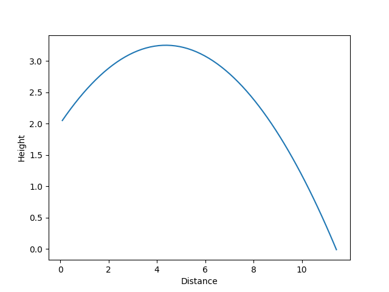
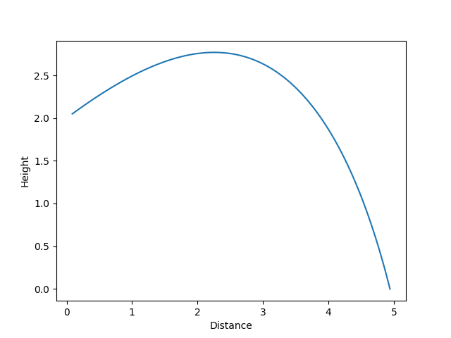
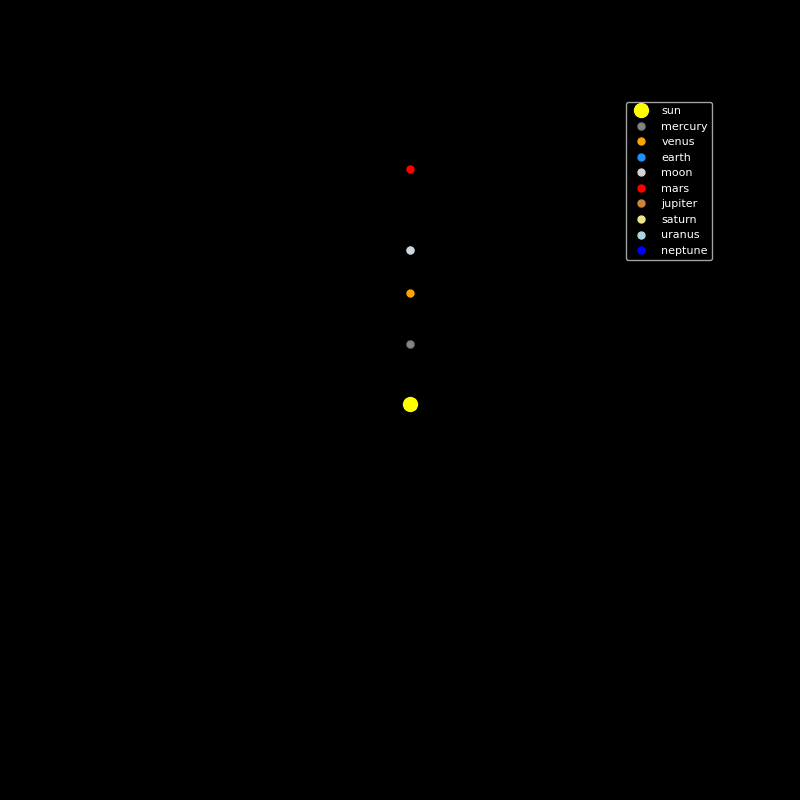
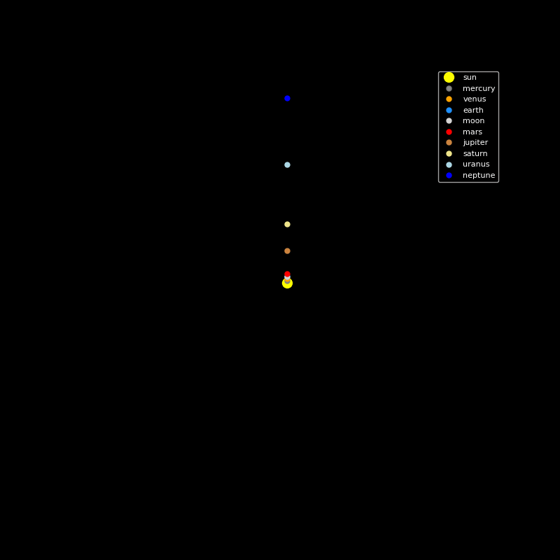

Sheet 02.3 — Python & Modelling
Software
Computational Physics Simulations
A set of simulations written in Python, exploring how far you can predict real-world motion with code before you ever build the hardware — a projectile motion simulator, and an orbital mechanics simulator in progress.
aOverview
After learning suvat equations in maths I was curious to see how accurately numerical models can predict the world around us. As a result I programmed 2 physics simulations that I could test with real world data.
bProjectile Motion Simulator
I first programmed the projectile simulations. At the start it just plugged the information you gave it into the appropriate SUVAT equation. I then rewrote it to use numerical integration so that it actually simulated the motion. I experimented with different time steps and found that 0.01 seconds was a good balance between time to simulate and accuracy. After using numerical integration it was quite simple to graph the projectile using matplotlib and to account for drag between each time step. For small, slow simple objects the model was very accurate, however when I tested the model using my golf toptracer data it was wildly inaccurate. This is because it didn’t account for the magnus effect.
- You can see in the graphs below the differance air resistance makes. (Both simulations had the same starting position and velocity. The drag cofficent and area were chosen arbitrarily but are somewhat realistic values for everyday situations.)


cOrbital Mechanics Simulator
For the orbital mechanics simulator, I started with Euler's method for numerical integration with the only force being gravity between bodies. I tested the accuracy of my model using real planetary position data from the Nasa planetary position calculator and found my model was only 4 degrees off after 5 years of simulation. Using RK4 would have been better as it is far more accurate than Euler’s, although it does require more processing.
- The two GIFs below were created using my simulation. The first is an experiment with non-circular orbits, it shows that a very precise initial velocity is required to create a stable orbit. The second simulation is a 160 year simulation that shows the orbit of neptune. I had to increase the time step from 1 hour to 1 day to reduce simulation time as I had estimated it would take 3 hours to simulate. It took 8 minutes with the new larger time step.


dReflection
During this process I learnt a lot about computational analysis which is a very useful skillset in modern engineering to help test and optimise systems. I am excited to explore the topic further in future and plan to make a full physics engine.
eSpecification
| Parameter | Value |
|---|---|
| Language | Python |
| Libraries | Matplotlib, NumPy |
| Integration method | Euler's method' |
| Bodies modelled (orbital sim) | 10 |
| Validation approach | NASA's plantary position calculator, Toptracer golf data |